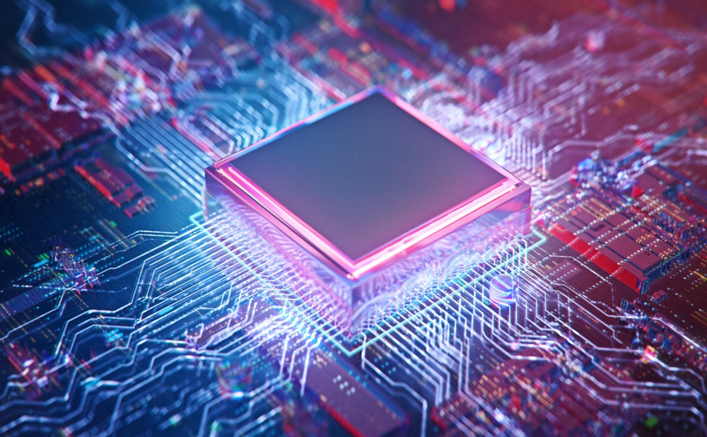

EE 567 Power Electronic

As an Electrical Engineer with a specialization in clean energy, I have been involved in projects that integrate solar and wind energy systems into the grid, which has sparked my interest. Power electronics is a key component in efficiently incorporating renewable energy sources, such as solar panels and wind turbines, into the electrical grid. They handle the variability and unpredictability of renewable energy outputs to ensure they meet grid requirements. Grid-tied inverters, governed by power electronics, transform the direct current produced by clean energy sources into alternating current compatible with the grid. Energy storage systems, including batteries, depend on power electronics to control charging and discharging processes, maximizing the use of stored energy.
The course, an extension of Power Electronics taught by Dr. Xiu Yao, explored a variety of control mechanisms and their applications. The lectures were enlightening, and the material was pertinent to the assigned homework and projects, which were demanding yet gratifying to complete.
The final project involved collaborating to design an inverter for an electric vehicle's propulsion system. We studied the operational points of diodes, switches, and inverters, including simulations at different operating conditions (Figure1). This included calculations for power output, power factor, modulation indices, and RL parameters for three scenarios: maximum power and torque, high speed and low torque, and low speed and high torque (Figure 2, Figure 3, Figure 4). We also examined power losses in the switches and diodes used in the circuit model, specifically focusing on the CM600DY-24A IGBT module. In the end, we provided a comprehensive analysis of the design considerations and simulations essential for an efficient inverter in an electric vehicle propulsion system.
This course provided a comprehensive understanding of state-space modeling, control, power electronics averaging, and feedback control. It offered practical knowledge on designing various circuits, inverters, and converters, with a focus on real-world applications. Despite its demanding nature, the course was instrumental in honing time management skills and understanding the rigor of the field. It was a satisfying experience that allowed for experimentation with various model parameters. I would highly recommend this course to graduate students for its blend of theoretical and practical aspects.